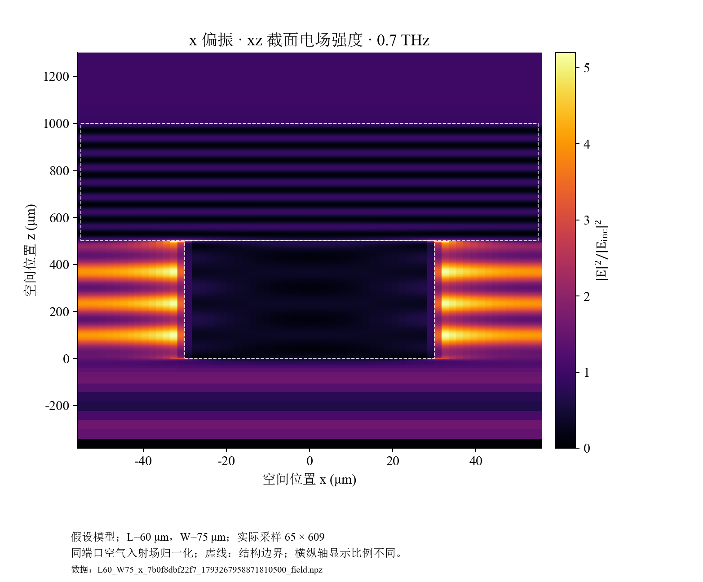
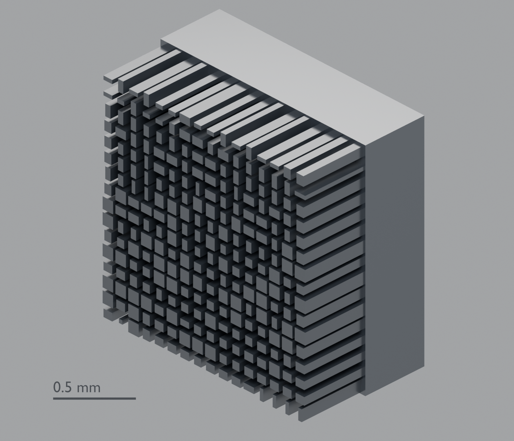

计算单元响应
同一个硅柱的长、宽，同时决定 x / y 两种偏振的振幅与相位。
周期单元 FDTD · 真实求解数据基于真实 FDTD 单元响应的三层近似传播仿真
大学生创新训练 · 2026 年 10 月阶段成果
把硅微柱的真实 FDTD 响应接入三层传播模型，观察偏振、转角与层间距怎样影响一条消息的恢复。
传播与接收在浏览器内计算，无需启动 FDTD。原始消息不上传服务器。

设计 C 从原 25 种候选中选用 24 种。
扩充归档、候选库与实际用量分别记录。
本轮完成了什么
同一个硅柱的长、宽，同时决定 x / y 两种偏振的振幅与相位。
周期单元 FDTD · 真实求解数据每一格选用真实几何。第二层旋转时，同时处理位置与偏振响应。
查表 + 近似传播 · 非整片全波固定同一份复场观测，改变候选参数，比较解码、误码和校准结果。
交互实算 · SHA-256 检查观测一致可重复的讲解案例
有效包中的错误位 / 总位数。匹配参数下恢复消息，CRC 通过。
分别只改一个参数，再恢复匹配。观察实际输出，而非预设乱码。
80 个有效位的错误数变化。校准后仍错 1 位，CRC 未通过。
动手试一条消息
先保存观测，再修改接收参数。输入、信号与结果均在本机浏览器中处理。
默认案例 ECNU。发送后，后续参数对比始终使用同一份观测。
偏振为线偏振方向；仅第二层绕中心旋转。d₂₃ 从第二层入口面量至第三层入口面，包含前层 1 mm 厚度；对应空气间隙为 d₂₃ − 1 mm。
生成的观测保存在本页；可导出文件留存。改变接收参数不会重新发送。
局部校准窗口 ±3° / ±3° / ±0.3 mm；不会获得原文或真实密钥。
尚未发送接收端不会重新生成观测。没有计算结果时不显示默认成功数据。
| 操作 | α / ° | θ / ° | d₂₃ / mm | CRC | BER | 实际解码 |
|---|---|---|---|---|---|---|
| 尚未接收 | ||||||
本模式读取随包保存的案例结果，不实时运行传播或 FDTD，也不接受任意参数滑动。
从真实数据出发
单元 FDTD 和系统近似传播分别标注。点击图表可放大查看。
文献参数假设模型 · 0.7 THz · 三层各 16 × 16 单元 · 归档库 27 种几何 / 54 条响应 · 候选库 25 种，当前设计实际选用 24 种几何
实际优化设计 C。每格代表一个真实硅柱几何，同时决定两种偏振的振幅与相位。以下为已保存计算结果，不是整片三层 FDTD。
原始 FDTD 工程保留于项目本机，未上传。网站提供单元响应、复场观测及来源校验；图表不能替代原始工程检查。
真实几何 · 三维观察
按当前设计 C 的 768 个硅柱尺寸生成。鼠标操作仅改变观察视角，不改变仿真参数、观测或密钥。
光沿 +X 方向：L1 → L2 → L3 → 双偏振复场采样面。柱、基底各 0.5 mm；层入口位于 0、5、11 mm，采样面位于 16 mm。方向箭头不是求解得到的电磁场；采样面不是已实现的实体探测器。

当前采用三层 16 × 16 设计，从 25 种真实成对单元响应中选用 24 种。矩形柱的长、宽来自几何映射，未把相位值转成柱高。柱高、基底、周期和硅材料仍含文献借用与假设，不代表已完成芯片加工设计。
分层展开只改变展示位置；本查看器不联动更改 α、θ、d₂₃，也不会生成新的全息图或性能数据。每层柱阵列为独立可编辑网格，以减少网页绘制调用；768 个柱体的几何尺寸均保留。
下载 Blender 导出的 GLB · 下载可编辑源模型 · 查看模型来源及坐标说明研究记录
展示可用性、数值一致性和物理可靠性，是不同的验收问题。
真实 FDTD 单元响应已进入三层模型；标称文字收发、同观测参数对比和公开导频校准已有可重复结果。
27 种归档几何不代表连续尺寸域都已可靠覆盖。插值、局部耦合和部分误差恢复仍存在失败项。
偏振初值误差为 2° 时，公开导频校准把错误从 15/80 减少到 1/80，仍未通过 CRC。另有六个近邻错参数案例在校准后恢复了消息。
当前 0.7 THz 模型的公开候选遍历与连续参数搜索均有成功恢复记录。它说明了当前方案的安全边界，不能删去或改写成攻击失败。
CRC 用于检错；三个连续参数也不能按小数位数直接换算成密钥位数。
下载当前攻击原始记录 ↓另保留 历史 532 nm 模型记录，二者不是同一个模型。
进一步查看
所有演示消息均为公开示例。网站不包含账户凭据、许可证或原始 FSP 工程；原始工程继续保留于项目本机。